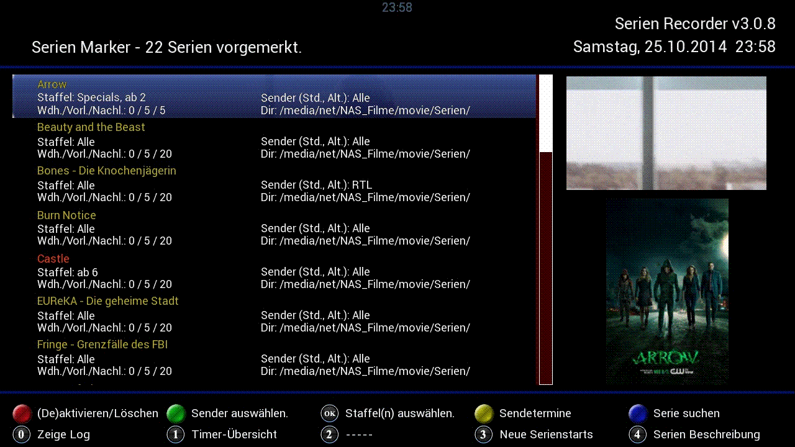
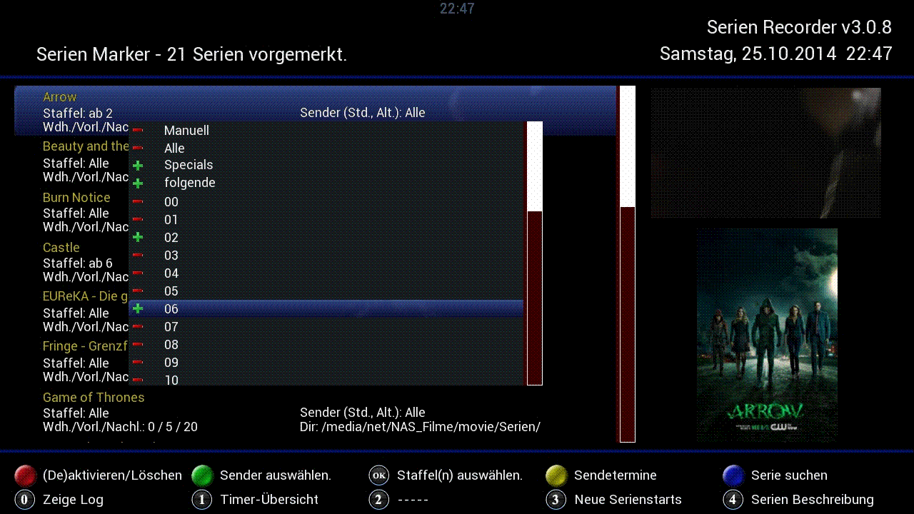
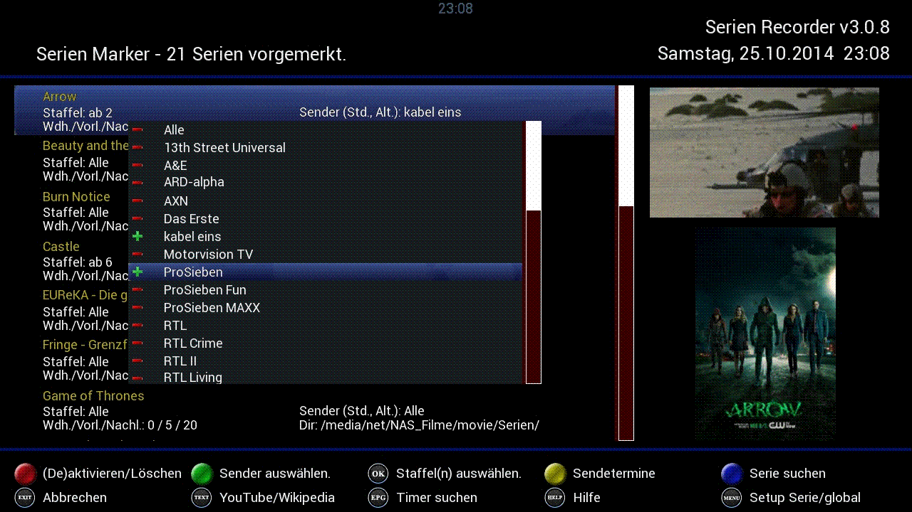
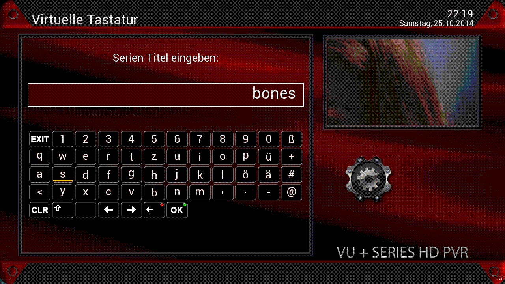
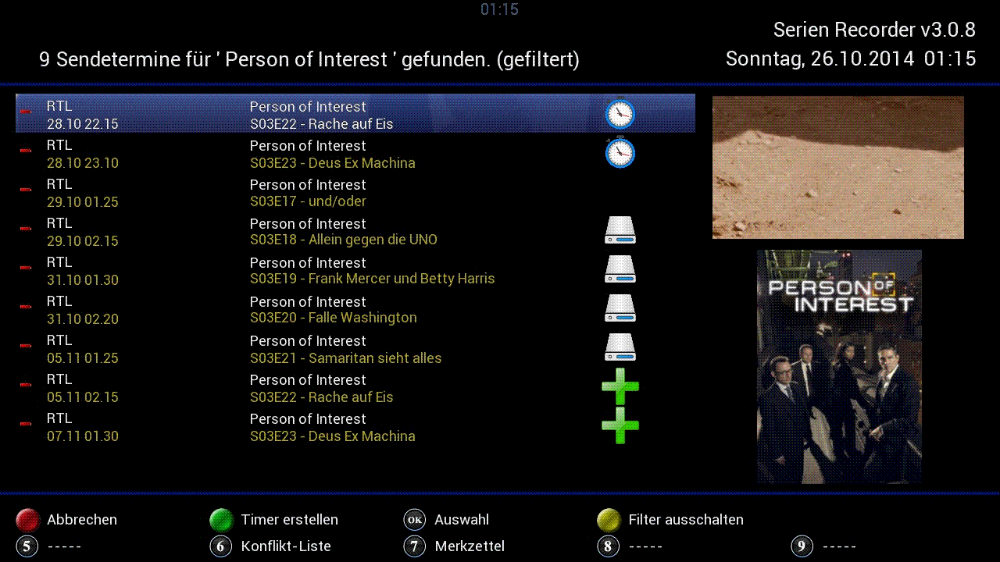

|
4 Die
Serien-Marker
In diesem
Kapitel wird
eine der wichtigsten Funktion des SerienRecorders behandelt, die Serien
Marker. Alle Serien, die in den Suchlauf
(Auto-Check) einbezogen werden, sind hier aufgelistet.

Fig.4.1: Die Serien-Marker
Oben in
der Kopfzeile kann man ablesen
wie viele Serien vorgemerkt sind (im Beispiel sind es 21).
Die
Liste zeigt jeweils in gelber Schrift den Namen der Serien und deren
Einstellungen, für die Serie „Arrow“ sind
im obigen Beispiel
alle Folgen ab Staffel 2 und evtl. Specials vorgemerkt. Es sind alle
Sender erlaubt (im Gegensatz zur Serie „Bones – Die
Knochenjägerin“ – dort wird die Suche auf
den Sender „RTL“
beschränkt). Die Informationen „Wdh./Vorl./Nachl.: 0
/ 5 / 5“
sagt aus, dass jede Folge jeweils nur einmal aufgenommen werden soll
(also keine Wiederholung) und die Vor- und Nachlaufzeit ist auf 5
Minuten konfiguriert. Das Verzeichnis in das aufgenommen wird, kann
hier auch noch abgelesen werden.
Mit der roten
Taste kann ein Marker deaktiviert werden, d.h. es werden für
diese
Serie keine Timer mehr angelegt. Alle Einstellungen für diesen
Marker bleiben aber erhalten. Deaktivierte Marker werden in der
Serien-Marker-Ansicht in roter Farbe angezeigt. Der Marker kann
jederzeit durch erneutes Drücken der rotenTaste
wieder aktiviert werden. Falls mehrere Boxen auf die selbe Datenbank
(z.B. auf einem Netzlaufwerk) zugreifen, gilt die Deaktivierung nur
für die aktuelle Box. Dabei ist darauf zu achten, dass für
jede Box in den globalen Einstellungen eine andere ID eingestellt ist.
Beim
langen Drücken der roten
Taste wird der Marker endgültig gelöscht. Es erfolgt
eine
Abfrage, ob auch ALLE Einträge zu dieser Serie aus der
Timer-Liste
gelöscht werden sollen. Wird diese Frage
mit „Ja“ beantwortet, wird also auch die
Information gelöscht, welche Folgen bereits aufgenommen
wurden.
4.1
Die Serien-Einstellungen  
Mit
der OK
Taste können die Staffeln ausgewählt werden.
Mehrfachauswahl
ist möglich, allerdings schließen einige der
Auswahlmöglichkeiten alle anderen aus,
z.B. „Manuell“ (schließt alle
anderen Einstellungen aus), oder „Alle“
(beinhaltet alle anderen Einstellungen).

Fig.4.2: Die Staffelauswahl
Die
Einstellung der Reihe nach:
-
„Manuell“ bedeutet,
dass diese Serie vom Auto-Check ausgenommen ist, Timer können
ausschließlich manuell erstellt werden. Wird
„Manuell“ ausgewählt, sind alle anderen
Einstellungen,
die hier gemacht werden, hinfällig, da diese Serie beim
Suchlauf
(Auto-Check) nicht berücksichtigt wird.
Hinweis:
Soll ein Marker nur vorübergehend deaktiviert,
sämtliche
Einstellungen aber beibehalten werden, dann ist dieser mit der roten
Taste zu deaktivieren (s. Kapitel
4)
-
„Alle“
nimmt alle Folgen der Serien auf. Auch hier sind alle anderen
Einstellungen hinfällig.
-
„Specials“
nimmt spezielle Folgen auf, die nicht in das Schema SnnEmm passen. Das
kann z. B. „F“ wie Folge sein (öfter bei
ORF), oder auch S oder TÜ usw.
-
„folgende“
gilt immer nur in Verbindung mit einer Staffel-Auswahl darunter. Im
obigen Beispiel werden die Folgen der Staffel 02, sowie alle Folgen ab
Staffel 06 aufgenommen. Damit sind auch dann auch die Folgen der
Staffel 07 usw. inbegriffen. Würde die Option
„folgende“ ausgeschaltet, würden nur
Folgen der Staffeln 02 und 07 aufgenommen.
- „00“ wird
für Serien
verwendet, bei denen keine Staffelbezeichnug vorhanden ist, sondern die
Folgen einfach fortlaufend nummeriert sind (z.B. Der Alte, Tatort,
etc.).
Wird „00“ ausgewählt,
öffnet
sich im Anschluss die virtuelle Tastatur, wo man eingeben kann, ab
welcher Folge Timer erstellt werden sollen (z.B. Tatort, ab Folge 920).
In den globalen
Einstellungen kann
übrigens auch konfiguriert werden, wie viele Staffeln in
diesem
Dialog angezeigt werden sollen (die Standardeinstellung ist 30).
Mit
der grünen
Taste können die Sender ausgewählt werden. Auch hier
ist eine Mehrfachauswahl möglich.

Fig.4.3: Die Senderauswahl
Über
die MENU
Taste lassen sich
wie - bei den Sendern auch -, einige der globalen Einstellungen
überschreiben. Das
kann dann z. B. der Speicherort
sein. Hierbei ist zu beachten, dass wenn hier ein Speicherort
eingestellt ist, wird die Serie genau in diesen Ordner aufgenommen. Es
wird dort
dann kein „Serienordner“ angelegt, auch wenn dies
in den globalen
Einstellungen aktiviert ist. Es werden lediglich
„Staffelordner“
angelegt, vorausgesetzt diese Option in den globalen Einstellungen
aktiv.
 Fig.4.4:
Die SerienMarker-Einstellungen
Fig.4.4:
Die SerienMarker-Einstellungen
Eine
Option wollen wir hier noch näher betrachten:
-
Bevorzugte
Channel-Liste
Zur Auswahl stehen
hier „Standard“ und
„Alternativ“.
Über diese Einstellung kann festgelegt werden, welcher Sender
(standard oder alternativ) für die Timer-Erstellung benutzt
werden
soll. Im Fall eines Timer-Konflikts wird dann auf den jeweils
anderen ausgewichen. Selbstredend ist diese Option nur dann wirksam,
wenn auch alternative Sender eingestellt sind.
4.2
Die Suche nach einer Serie 
Über die blaue
Taste gelangt man zur Seriensuche. Damit kann man auch Serien
hinzufügen, die
noch gar nicht gestartet sind, z.B. eine Serie, die ihren Start erst in
2 Monaten auf Sender XY hat). Voraussetzung hierfür ist aber
auch
wieder, dass diese Serie bereits auf Wunschliste.de gelistet
ist.

Fig.4.5:
Die Serien-Suche
Mittels der virtuellen Tastatur (oder die Zifferntasten der
Fernbedienung) wird der Suchbegriff (der Name der Serie) eingegeben,
und die Suche mit der grünen
Taste (oder OK
auf der virtuellen Tastatur) gestartet. Dabei ist es nocht zwingend
nötig, den kompletten Namen einzugeben. Aber aufgepasst: Je
weniger Zeichen eingegeben werden, desto größer wird
die
Trefferliste, aus der dann die gesuchte Serie ausgewählt wird.
 Fig.4.6:
Die Serien-Suche
Fig.4.6:
Die Serien-Suche
Wurde die gesuchte Serie gefunden, wird sie einfach durch
Drücken der OK
Taste zu den Serien-Markern hizugefügt, und die
Serien-Marker-Ansicht wird geöffnet, um alle Einstellungen
für den neuen Marker vornehmen zu können. Beim
Verlassen der
Serien-Marker-Ansicht kommt man wieder zur Serien-Suche (virtuelle
Tastatur), um nach der nächsten Serie suchen zu
können. Das
wiederholt sich solange, bis man die Suche (virtuelle Tastatur) mit der
EXIT
Taste (oder EXIT auf der virtuellen Tastatur) beendet.
4.3
Die Sendetermine 
Mit der gelben
Taste in der Serien-Marker-Ansicht werden die Sendetermine der
ausgewählten Serie angezeigt.

Fig.4.7:
Die Sendetermine
Der
SerienRecorder liefert uns auch hier wieder zusätzliche
Informationen zu jedem einzelnen Termin:
- Bereits aufgenommene Folgen werden mit
dem Festplattensymbol
 angezeigt. angezeigt.
- Folgen für die bereits ein Timer
erstellt wurde, werden mit dem Uhr-Symbol gekennzeichnet.
- Das Plus-Symbol kennzeichnet
Folgen, für die bereits zu einem anderen Sendetermin ein Timer
erstellt wurde.
4.3.1
Das Filter
Mit der gelben
Taste wird in der Sendetermine-Ansicht das Filter ein- bzw.
ausgeschaltet. Bei ausgeschaltetem Filter werden die Sendetermine auf
ALLEN Sendern angezeigt, bei eingeschaltetem Filter (default) nur die
Sendetermine auf den aktivierten Sendern.
4.3.2
Die manuelle Erstellung von Timern
In der Sendetermine-Ansicht können
Timer auch
manuell erstellt werden. Dazu werden zuerst alle gewünschten
Termine mit der OK Taste ausgewählt. Die ausgewählten
Termine
werden auf der linken Seite durch ein Plus-Symbol markiert.

Fig.4.8: Timer manuell erstellen
Durch Drücken der OK Taste wird für alle markierten
Sendetermine ein Timer erstellt. Dabei werden alle Einstellungen
(global, Serie, Sender) berücksichtigt. Allerdings kann man
die
Erstellung von Timern erzwingen (z.B. wenn der Sendetermin ausserhalb
der erlaubten Zeitspanne liegt), indem man in den globalen
Einstellungen die Option „ Manuelle Timer immer erstellen“
auf „Ja“ stellt.
|